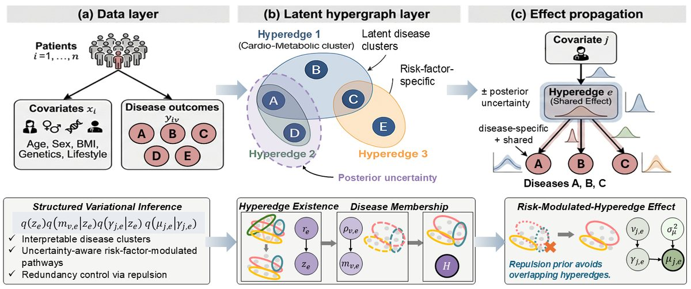
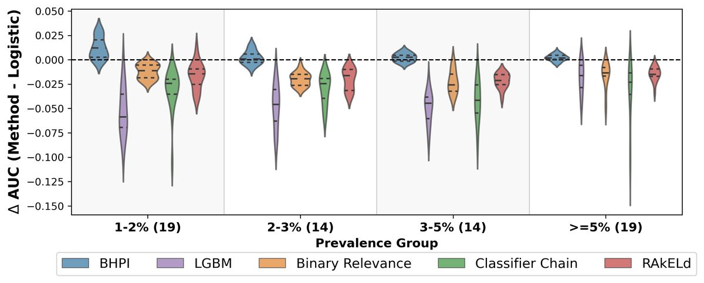
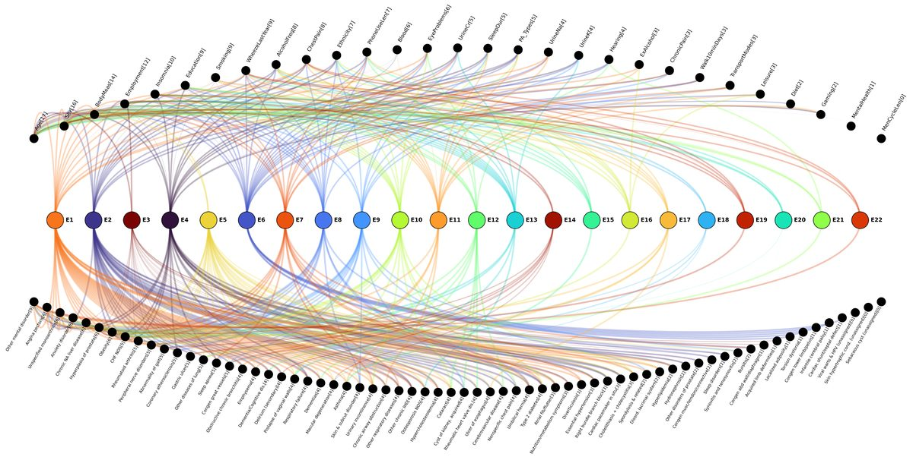

Electronic health records (EHR) pose large-scale multi-disease modeling problems in which many outcomes are rare and strongly influenced by shared risk factors. While modern approaches achieve strong predictive performance, they often treat diseases independently or rely on black-box architectures, offering limited insight into how risk factors organize disease risk and little principled uncertainty quantification.
We introduce a Bayesian hypergraph inference framework that reframes multi-disease modeling around latent, risk-factor–modulated disease pathways. Risk factors act on hyperedges — latent disease subsets with shared risk patterns — allowing diseases to participate in multiple distinct pathways and enabling interpretable, higher-order structure beyond pairwise associations. A repulsion prior encourages parsimonious and identifiable structure, while posterior inference provides calibrated uncertainty over both disease groupings and risk-factor influence.
To enable scalable inference on large EHR datasets, we develop a structured variational inference algorithm that preserves logical dependencies among hyperedge existence, disease membership, and pathway-level effects. Experiments on simulated data and the UK Biobank demonstrate stable and interpretable disease pathway structure, well-calibrated uncertainty, improved estimation for rare diseases, and competitive predictive performance.
| Approach | Borrows strength | Risk-factor–specific | Higher-order (> pairwise) | Uncertainty over structure |
|---|---|---|---|---|
| Independent logistic | ✗ | ✓ | ✗ | ✗ |
| Multi-task / black-box | ✓ | ✗ | partial | ✗ |
| Disease networks | partial | ✗ | ✗ | ✗ |
| BHPI (ours) | ✓ | ✓ | ✓ | ✓ |
BHPI is the only approach that borrows strength across diseases, keeps effects risk-factor–specific, captures higher-order (beyond pairwise) structure, and quantifies uncertainty over that structure.

BHPI is most valuable exactly where it is hardest — rare diseases — where independent baselines collapse with heavy negative tails. On the rarest diseases (<2% prevalence) it improves mean AUC by +1.2 points over optimally tuned logistic regression (p = 3×10⁻⁵). By borrowing strength across shared pathways, BHPI yields stable, interpretable estimates and competitive prediction.


@inproceedings{ding2026bhpi,
title = {Disentangling Latent Risk Pathways via Bayesian Hypergraph Inference},
author = {Ding, Shengxian and Gao, Haonan and Liu, Pangpang and
Tian, Xinyuan and Zhao, Yize},
booktitle = {Proceedings of the 43rd International Conference on Machine Learning (ICML)},
series = {Proceedings of Machine Learning Research},
publisher = {PMLR},
year = {2026},
eprint = {2606.07677},
archivePrefix = {arXiv}
}